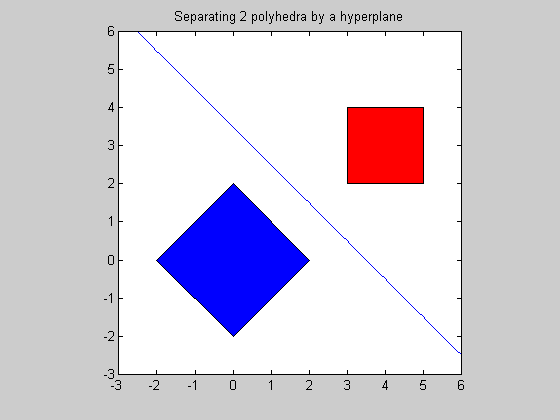

Section 8.2.2: Separating polyhedra in 2D
randn('seed',0);
n = 2;
m = 2*n;
A1 = [1 1; 1 -1; -1 1; -1 -1];
A2 = [1 0; -1 0; 0 1; 0 -1];
b1 = 2*ones(m,1);
b2 = [5; -3; 4; -2];
fprintf(1,'Finding a separating hyperplane between the 2 polyhedra...');
cvx_begin
variables lam(m) muu(m) z(n)
maximize ( -b1'*lam - b2'*muu)
A1'*lam + z == 0;
A2'*muu - z == 0;
norm(z) <= 1;
-lam <=0;
-muu <=0;
cvx_end
fprintf(1,'Done! \n');
disp('------------------------------------------------------------------');
disp('The distance between the 2 polyhedra C and D is: ' );
disp(['dist(C,D) = ' num2str(cvx_optval)]);
t = linspace(-3,6,100);
p = -z(1)*t/z(2) + (muu'*b2 - lam'*b1)/(2*z(2));
figure;
fill([-2; 0; 2; 0],[0;2;0;-2],'b', [3;5;5;3],[2;2;4;4],'r')
axis([-3 6 -3 6])
axis square
hold on;
plot(t,p)
title('Separating 2 polyhedra by a hyperplane');
Finding a separating hyperplane between the 2 polyhedra...
Calling SeDuMi: 11 variables (0 free), 5 equality constraints
------------------------------------------------------------------------
SeDuMi 1.1 by AdvOL, 2005 and Jos F. Sturm, 1998, 2001-2003.
Alg = 2: xz-corrector, Adaptive Step-Differentiation, theta = 0.250, beta = 0.500
eqs m = 5, order n = 11, dim = 12, blocks = 2
nnz(A) = 17 + 0, nnz(ADA) = 25, nnz(L) = 15
it : b*y gap delta rate t/tP* t/tD* feas cg cg prec
0 : 1.25E+001 0.000
1 : -1.28E+000 3.97E+000 0.000 0.3167 0.9000 0.9000 2.37 1 1 1.8E+000
2 : -2.11E+000 7.52E-001 0.000 0.1897 0.9000 0.9000 1.38 1 1 2.9E-001
3 : -2.12E+000 3.80E-002 0.000 0.0506 0.9900 0.9900 1.07 1 1 1.4E-002
4 : -2.12E+000 6.95E-003 0.000 0.1828 0.9000 0.9000 1.01 1 1 2.6E-003
5 : -2.12E+000 1.81E-004 0.000 0.0260 0.9900 0.9900 1.00 1 1 7.7E-005
6 : -2.12E+000 2.90E-005 0.075 0.1602 0.9000 0.4777 1.00 1 1 1.8E-005
7 : -2.12E+000 1.02E-007 0.000 0.0035 0.9990 0.9990 1.00 1 1 1.4E-007
8 : -2.12E+000 3.48E-009 0.000 0.0342 0.9000 0.7312 1.00 2 2 2.8E-008
9 : -2.12E+000 9.28E-010 0.000 0.2671 0.9000 0.7705 1.00 2 2 7.4E-009
iter seconds digits c*x b*y
9 0.1 Inf -2.1213203161e+000 -2.1213203136e+000
|Ax-b| = 2.9e-010, [Ay-c]_+ = 2.3E-008, |x|= 1.9e+000, |y|= 3.9e+000
Detailed timing (sec)
Pre IPM Post
4.006E-002 1.302E-001 1.001E-002
Max-norms: ||b||=1, ||c|| = 5,
Cholesky |add|=0, |skip| = 0, ||L.L|| = 2165.92.
------------------------------------------------------------------------
Status (cvx_status): Solved
Optimal value (cvx_optval): 2.12132
Done!
------------------------------------------------------------------
The distance between the 2 polyhedra C and D is:
dist(C,D) = 2.1213
